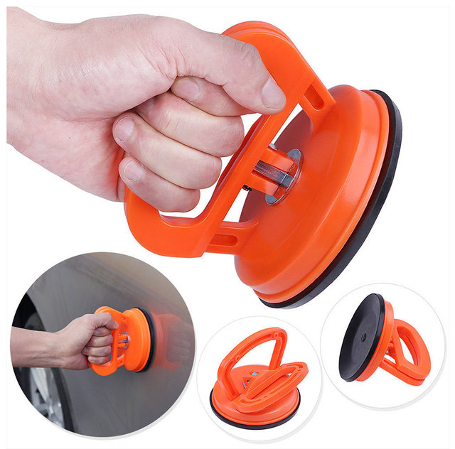
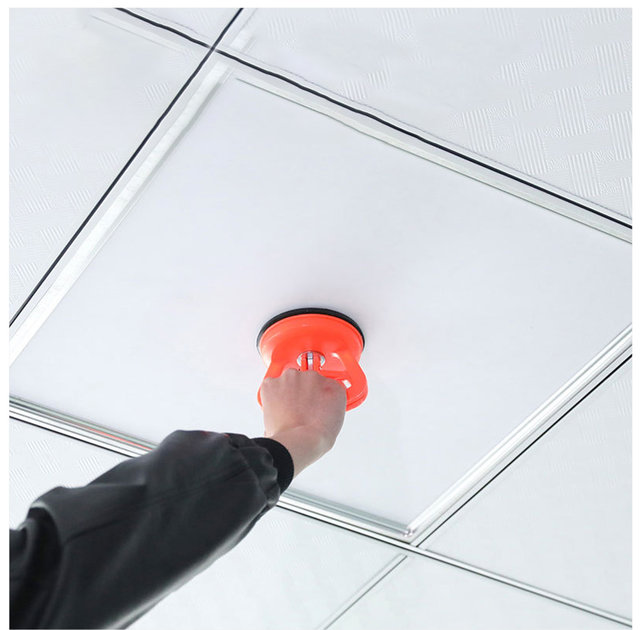
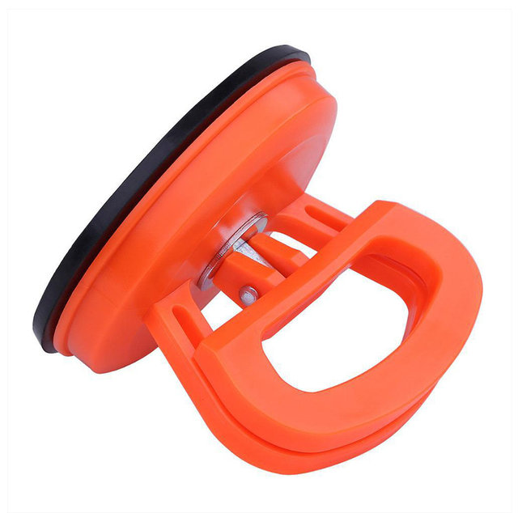
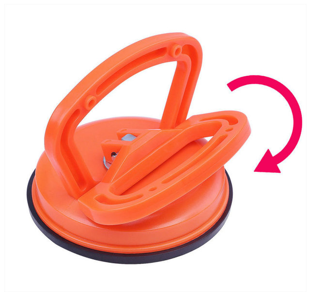
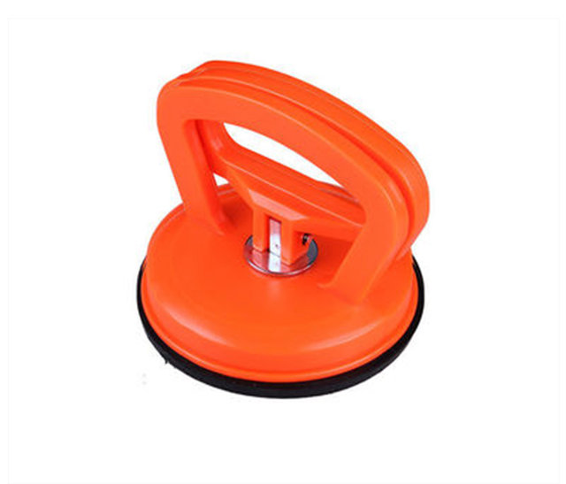
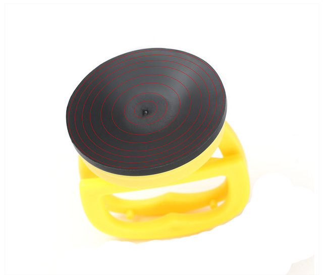
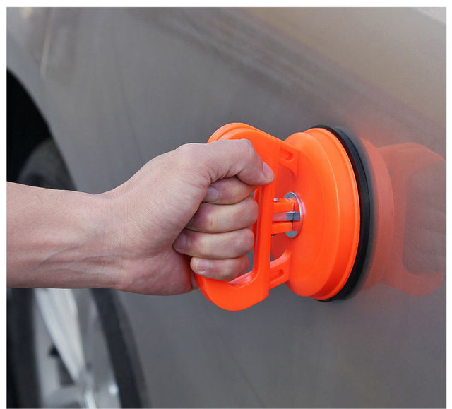
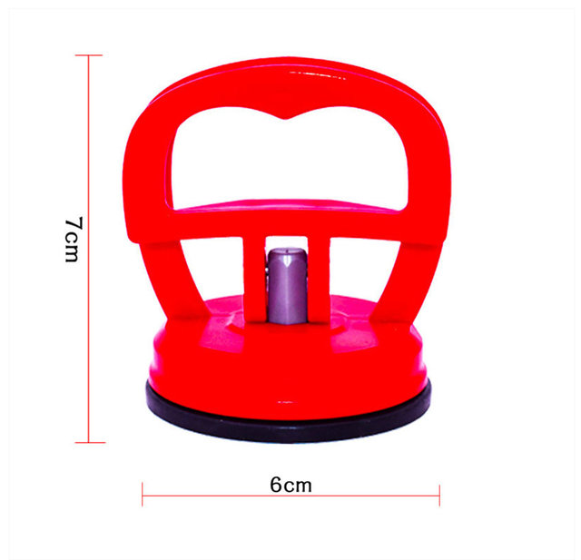

Features:
It is very suitable for pulling out metal dents with quick release handle.
It can also be used for windows, mirrors and doors with smooth surfaces.
Ideal for home, shop, garage or workplace.
Durable, high impact resistance.
Specifications:
Specifications:
Maximum load: 15kg
Diameter: about 5.5 cm /2.17 inch
Material: ABS + rubber







